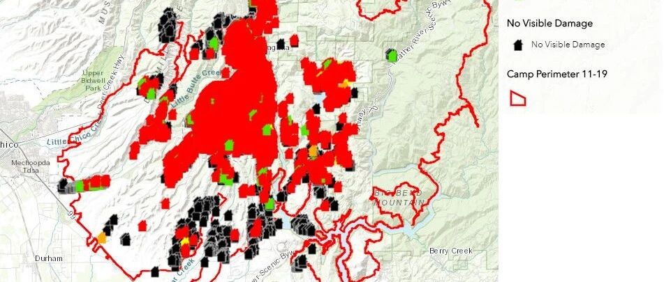

转载：加州大火如何破？区域模拟来支招
以下文章来源于学术小镇 ，作者DrXuZhen
北科大许镇老师的公众号
本文转载自许镇博士的”学术小镇“
最近本人在加州，对加州大火的直接体验就是了吸了两周的烟灰。因为大火，加州空气非常不好，大学也停过课。今日，“学术小镇”就从区域火灾模拟的角度来谈谈加州大火。
1
加州Camp大火
此次加州大火并不是一处火灾，而是南北同时起火。南部火灾烧了一些好莱坞明星的房子，而北部的Camp大火则是加州历史上造成死亡最多的火灾。目前，根据加州森林及防火局CalFire的数据，大火已造成79人死亡，超过200人失踪。
Camp大火起火时间为November 08, 2018 6:33 am，目前已持续12天。据The Economist报道，燃烧面积超过130,000英亩，近似芝加哥市的面积。通过以下视频直观感受一下火灾现场吧。
Camp山火视频（来源网络）
据CalFire最新统计，此次大火毁坏住宅12,637栋, 商业建筑483栋和其他建筑3,718栋，具体破坏程度如下图所示。目之所及一片红色，说明绝大部分都被烧毁了，损失非常严重。

Camp山火烧毁房屋情况（来源CalFire）
顺便提一句，为灭这场大火共投入了多少人力呢？CalFire数字显示：一共4,665人，包括389名火灾工程师和95名CalFire员工，其他人员未说明（不会都是志愿者吧）。物资方面，推土机46辆，直升机17架，供水车52辆。
4,665人要这场面积超过130,000英亩的大火，等效于1个人要救27英亩的火灾（1 英亩 = 0.004 平方公里），也就是0.1平方公里，相当于14个国际标准足球场的面积。
CalFire预计11月30日可以完全控制火情，但估计要看预报的雨是否能下。
2
区域火灾模拟的作用
面对如此大火，我们应该如何应对呢？区域火灾模拟是一把消防利器。
在灾前，区域火灾模拟可以给出可能的火灾蔓延路径和范围，因此可以指导消防规划，比如建筑采用多大安全距离？应采用何种隔离？高风险区域禁建等等。
在灾中，区域火灾模拟可以结合火灾实际条件，给出火灾蔓延的趋势、速度、规模等，因此可以指导消防救援。比如加州大火，应该在哪里隔离？隔离带多宽？有没有足够的时间建立隔离等等，这些消防救援的重要决策依据不能仅仅凭经验，更需要有模拟的支持。
这次加州Camp大火，引出了3类区域火灾模拟问题，如下：
[1] 森林火灾模拟
这是一个重要的研究领域，相关模拟方法和平台很多。“学术小镇”课题组曾利用加拿大森林火灾联合中心研发的Prometheus开展过森林火灾的模拟，但项目内容不好透露，简单分享一下这款软件，仅供参考。
这款软件可以通过卫星图像进行植物类别和地物的识别，然后定义不同植物的燃烧模型以及环境参数，就可以实现火灾蔓延的模拟了。Prometheus的模拟结果如下图所示：

Prometheus林火蔓延模拟结果（来源软件官网）
这款软件的优势在于模拟速度快，但缺点是以地表网格为单元进行了大量简化，无法得到详细的火灾热力学参数，模拟结果相对粗糙，适合做蔓延趋势和范围的快速计算。
[2] 森林-城市交界火灾模拟
这是一个非常有意义，也非常复杂的问题。“学术小镇”也曾做过一定研究，但内容还是不好透露，只分享一种方法，Wildland-Urban Fire Dynamics Simulator (WFDS)。
熟悉火灾模拟的同行都知道FDS，一看这WFDS可能也眼熟。不错，这个平台也是美国技术标准局NIST资助，在知名火灾模拟软件FDS的基础上，专门研发了针对森林-城市交界火的模型。WFDS的基本模拟情况如下图所示：

WFDS城市-森林交界火模拟情况（来源WFDS官网）
应该说，WFDS是实打实的CFD模拟，可以给出精细化的火灾动力学参数（如温度、热辐射强度等）以及各种燃烧参数（如氧气含量等）。但是，这种模拟耗时严重，主要依赖大型计算机。
值得一提的是，WFDS在2010年发公告说“研究还在继续，并未完成”，然后便无更新，估计是停了。在美国，funding是科研的动力，没有funding，研究也就难以维持了。不知道这次加州大火过后，是否有新的funding可以资助相关研究。
[3] 城市区域火灾模拟
对于城市区域火灾模拟问题，本人与清华大学任爱珠教授、陆新征教授共同研发了区域建筑群火灾蔓延模型和城市地震次生火灾蔓延模型。
对于耐火性能比较低的建筑群，例如此次加州大火的木结构房屋，发生火灾大范围蔓延的可能性很大，可以采用区域建筑群火灾蔓延模型开展模拟。
该模型已经模拟了2014年云南香格里拉县独克宗古城的火灾、2016年贵州苗寨火灾和2016年日本新潟县糸鱼川市火灾。详情可点击国内火灾模拟和日本火灾模拟。

2014年云南香格里拉县独克宗古城的火灾模拟

2016年贵州苗寨火灾蔓延模拟

2016年日本新潟县糸鱼川市火灾蔓延模拟
对于耐火性能比较强的建筑群，例如钢筋混凝土建筑，如果建筑外立面没有采用特别材料的话，一般很难发生大规模蔓延。但是，如果是地震次生火灾，情况就不一样了。建筑倒塌，墙体开裂等造成大量燃烧物外露，这种情况具有火灾大面积蔓延的可能性。
日本就发生过多起城市地震次生火灾大面积蔓延的惨剧。1995年日本阪神大地震中，仅神户市内就有419处起火，建筑燃烧的面积约100公顷，是第二次世界大战以来燃烧面积最大的一场城市火灾。
城市地震次生火灾可以采用我们研发模型开展火灾蔓延模拟。目前，该模型实现了我国某城市和清华大学校园的地震次生火灾模拟，详情点击见链接。

我国某城市地震次生火灾模拟

清华园地震次生火灾模拟
以上区域火灾模拟结果给出了火灾蔓延的路径、范围和时序过程，可以为消防规划和火灾救援提供重要参考。
3
结语
此次加州Camp大火从森林蔓延到了城市，涉及了本文所说的林火、森林-城市交界火和城市火三种区域蔓延模拟问题。如果提前建立好森林-城市的火灾模型，通过以上区域火灾模拟及时预测火灾蔓延的路径和范围，然后依据模拟结果集中力量隔离，及时通知民众疏散，也许这场Camp大火可以不这么惨烈。
总之，区域火灾模拟是一个很好的消防利器，希望能发挥更大的作用。


相关研究
长按识别二维码，关注我们的科研动态